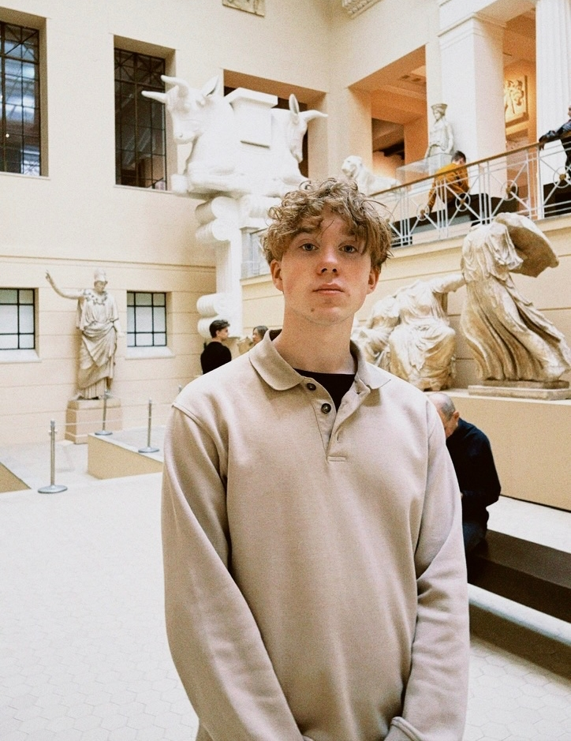

Скоро / В разработке
Новый кейс появится здесь
Оформляю дизайн-процесс, пользовательские сценарии и продуктовые решения.
Продуктовый дизайнер
У меня 3 года опыта. Разрабатывал e-commerce продукт и проектировал цифровые сценарии, где важны ясная структура, аккуратный UI и удобство для пользователя.

Антиплагиат / EdTech & AI Assistant
Спроектировал zero-prompt сценарии, человеческий вердикт и навигацию к проблемным фрагментам в 1 клик: снизил ступор перед нейросетью и отток пользователей.
Sber CIB / B2B FinTech & Analytics
Внедрил закрепление базового года, независимый вертикальный скролл фильтров и шапки таблицы: аналитики банка сопоставляют прогнозные периоды без потери контекста.
Silkway / B2C mobile app
Кейс про создание UI-кита, консистентность интерфейса и редизайн личного кабинета с акцентом на понятные сценарии и продуктовую логику.
Lawber / P2P mobile app
Кейс про user flow, прозрачный процесс назначения адвоката и понятный клиентский путь с акцентом на доверие и контроль над статусами дела.
TAXI TROIKA / B2C mobile app
Кейс про быстрые сценарии для водителей, работу с картой, прозрачные статусы поездки и снижение времени реакции на заказ в реальных условиях движения.
Скоро / В разработке
Оформляю дизайн-процесс, пользовательские сценарии и продуктовые решения.
Скоро / В разработке
Готовлю новые материалы, интерактивные прототипы и описание дизайн-системы.
Участие в проекте дизайн школы.
02 Спикер на медиа школеЛекция «Стили в дизайне. Плагины».
Ссылка будет размещена позже.